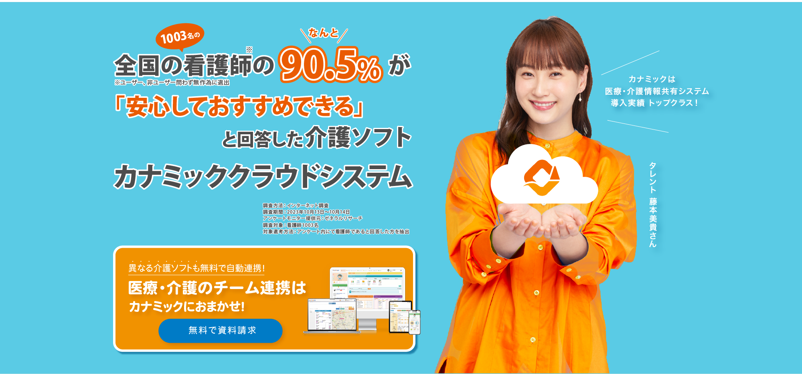
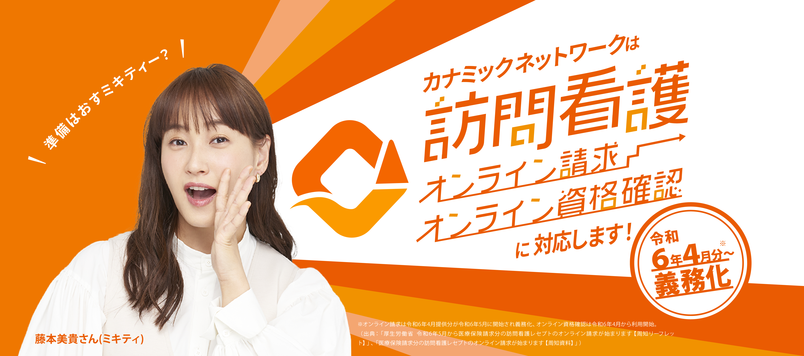
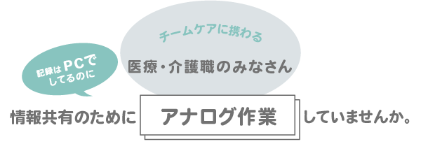
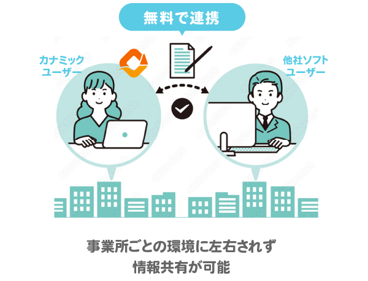
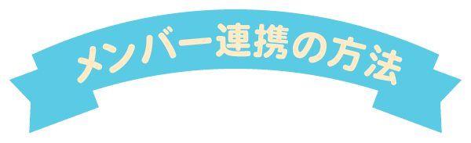
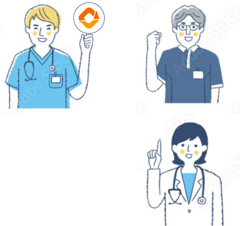
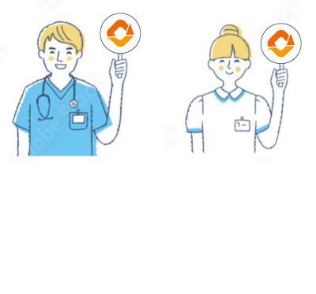

「ケアプランデータ連携システム」が2023年4月スタート
これからの地域包括ケアは
データ連携が主流になります
令和６年介護保険法改正の基本指針として、
地域包括ケアにデジタル技術を活用し
連携を円滑に進めるための基盤を整備する方針
が示されています。
第９期介護保険事業（支援）計画の基本指針（大臣告示）のポイント（案）」より

メンバーごとに使用している
介護ソフトが違う
介護ソフトをチームでの
情報共有には活用できていない・・・
他の法人の事業所なので
連携が取りにくい
だれとでも介護ソフトを連携できるから
情報共有のためのアナログ作業は不要に!!

連携業務が
介護ソフト内で完結できると・・・
事務作業の負担が減る！
印刷や郵送の手間・コストが削減できる！
転記ミスが減る！
チーム内で常に最新の情報を共有できる!

カナミックユーザー同士の連携方法

カナミッククラウドサービスのユーザー同士のデータ連携の場合、1クリックで連携が可能です。
ユーザー以外のメンバーの連携方法

異なる介護ソフトを使用している相手でもカナミックユーザーが招待することで
無料でカナミックの連携機能を利用できます。メールアドレスでリンク共有して招待できます。
カナミッククラウドで
チーム連携を
スムーズにしませんか？
今使用している介護システムのお悩みや 法改正対応について知りたい、など お気軽にご相談だけでもOKです。 システムの無料お試しも可能です！
カナミックの機能の一例
リアルタイムに情報共有できる連携に役立つ機能をご紹介します。
各種法改正に対応
カナミックはクラウドサービスだから最新の情報がすぐにソフト上に反映されます。
各種法改正に対応
カナミックはクラウドサービスだから最新の情報がすぐにソフト上に反映されます。